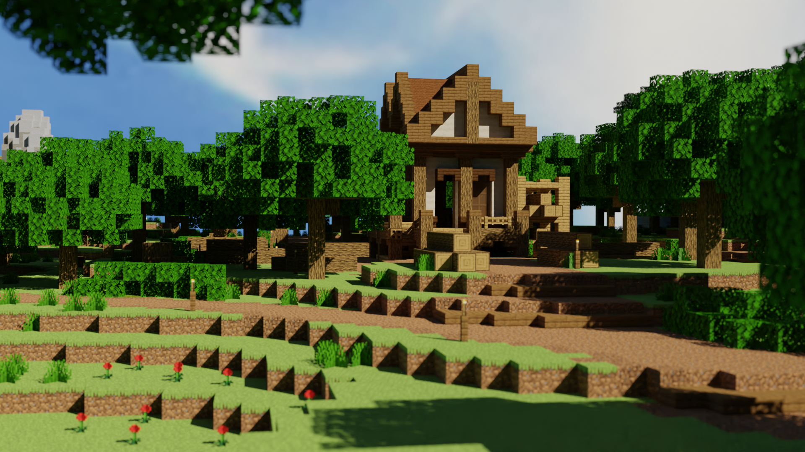

Foraging Xp Gain
| Block | Base Xp | Location | |
|---|---|---|---|
| Oak Wood | +6 | Hub | |
| Birch Wood | +6 | The Birch Park | |
| Spruce Wood | +4 | The Spruce Woods | |
| Dark Oak Wood | +4 | The Dark Thicket | |
| Acacia Wood | +4 | The Savana Woodland | |
| Jungle Wood | +2 | The Jungle Island | |
| Flowers | +1 | Hub(The Flower House) and The Park |
Locations
| Forest | The Flower House | The Park |
|---|---|---|
|  |  |
 |
| Birch Park | Spruce Woods | Dark Thicket |
 |
 |
 |
| Savana Woodland | Jungle Island | |
 |
 |
Extra Stuff
- Leveling up farming will grant strength
- At foraging level 1, you get access to The Birch Park.
- At foraging level 2, you get access to The Spruce Woods.
- At foraging level 3, you get access to The Dark Thicket
- At foraging level 4, you get access to The Savana Woodland
- At foraging level 5, you get access to The Jungle Island
- Combat 50 will give you 75 strength in total
- Best way to grind for foraging xp is cutting down dark oak logs at The Dark Thicket with a Treecapitator, an Ocelot or Monkey Pet, Foraging XP III potion, Booster Cookie, and The Toil Reforge